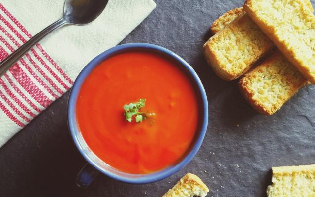

Tomatensoep

Ingrediënten
- 1 aardappel
- 1 wortel
- 1 ui
- 1 eetlepel tomatenpuree
- 500g tomaten
- 1 prei
- 1 liter kippenbouillon
- peper en zout
Bereiding
- Spoel de tomaten en snij ze in stukken.
- Pel en snipper de ui fijn.
- Snij het groen van de prei.
- Spoel het preiwit en snij het in ringen.
- Schil de wortel en aardappel en snij ze in blokjes.
- Fruit de ui glazig in een beetje boter of olie. Doe er de andere groenten bij. Laat een paar minuten zacht
stoven.
- Schenk er de kippenbouillon bij. Kruid met peper en zout. Laat 15 minuten zacht koken.
- Draai de soep door een roerzeef. Breng ze weer tot tegen de kook aan. Roer er de tomatenpuree door en kruid
ze eventueel nog wat bij.